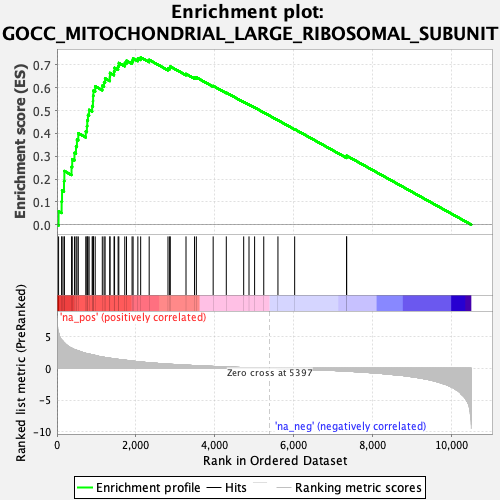
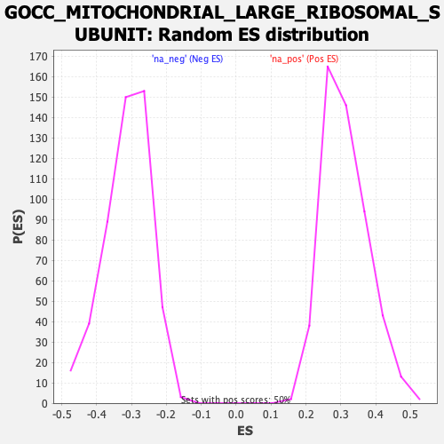

| Dataset | qlf.KOd4vsWTd4_gsea_score |
| Phenotype | NoPhenotypeAvailable |
| Upregulated in class | na_pos |
| GeneSet | GOCC_MITOCHONDRIAL_LARGE_RIBOSOMAL_SUBUNIT |
| Enrichment Score (ES) | 0.7331846 |
| Normalized Enrichment Score (NES) | 2.3452463 |
| Nominal p-value | 0.0 |
| FDR q-value | 0.0 |
| FWER p-Value | 0.0 |

| SYMBOL | RANK IN GENE LIST | RANK METRIC SCORE | RUNNING ES | CORE ENRICHMENT | |
|---|---|---|---|---|---|
| 1 | MRPL12 | 40 | 5.616 | 0.0590 | Yes |
| 2 | MRPL17 | 118 | 4.477 | 0.1017 | Yes |
| 3 | MRPL15 | 128 | 4.421 | 0.1503 | Yes |
| 4 | MRPL45 | 178 | 4.068 | 0.1912 | Yes |
| 5 | MRPL13 | 187 | 4.009 | 0.2352 | Yes |
| 6 | MRPL42 | 369 | 3.178 | 0.2535 | Yes |
| 7 | MRPL20 | 386 | 3.131 | 0.2870 | Yes |
| 8 | MRPL39 | 443 | 2.955 | 0.3147 | Yes |
| 9 | MRPL38 | 482 | 2.881 | 0.3433 | Yes |
| 10 | MRPL35 | 506 | 2.827 | 0.3727 | Yes |
| 11 | MRPL19 | 540 | 2.776 | 0.4006 | Yes |
| 12 | MRPL49 | 730 | 2.355 | 0.4089 | Yes |
| 13 | MRPL55 | 759 | 2.309 | 0.4321 | Yes |
| 14 | MRPL40 | 768 | 2.296 | 0.4570 | Yes |
| 15 | MRPL47 | 785 | 2.273 | 0.4809 | Yes |
| 16 | MRPL28 | 814 | 2.241 | 0.5033 | Yes |
| 17 | MRPS18A | 892 | 2.133 | 0.5198 | Yes |
| 18 | MRPL32 | 912 | 2.114 | 0.5416 | Yes |
| 19 | MRPL11 | 916 | 2.112 | 0.5649 | Yes |
| 20 | MRPL2 | 924 | 2.102 | 0.5878 | Yes |
| 21 | MRPL22 | 969 | 2.033 | 0.6063 | Yes |
| 22 | MRPL41 | 1149 | 1.785 | 0.6092 | Yes |
| 23 | MRPL24 | 1193 | 1.738 | 0.6245 | Yes |
| 24 | MRPL51 | 1220 | 1.711 | 0.6412 | Yes |
| 25 | MRPL37 | 1341 | 1.590 | 0.6475 | Yes |
| 26 | MRPL50 | 1343 | 1.590 | 0.6652 | Yes |
| 27 | MRPL3 | 1447 | 1.497 | 0.6721 | Yes |
| 28 | MRPL16 | 1460 | 1.489 | 0.6876 | Yes |
| 29 | MRPL46 | 1550 | 1.411 | 0.6949 | Yes |
| 30 | MRPL43 | 1568 | 1.398 | 0.7089 | Yes |
| 31 | MRPL30 | 1719 | 1.287 | 0.7089 | Yes |
| 32 | MRPL18 | 1763 | 1.256 | 0.7189 | Yes |
| 33 | MRPL53 | 1904 | 1.149 | 0.7183 | Yes |
| 34 | MRPL21 | 1930 | 1.129 | 0.7286 | Yes |
| 35 | MRPL27 | 2051 | 1.041 | 0.7287 | Yes |
| 36 | MTERF4 | 2122 | 0.996 | 0.7332 | Yes |
| 37 | MRPL23 | 2338 | 0.877 | 0.7224 | No |
| 38 | MRPL48 | 2815 | 0.664 | 0.6843 | No |
| 39 | MRPL36 | 2857 | 0.646 | 0.6876 | No |
| 40 | MRPL54 | 2873 | 0.639 | 0.6934 | No |
| 41 | MRPL14 | 3272 | 0.500 | 0.6609 | No |
| 42 | MRPL44 | 3488 | 0.433 | 0.6452 | No |
| 43 | NSUN4 | 3534 | 0.419 | 0.6456 | No |
| 44 | MRPL4 | 3961 | 0.300 | 0.6082 | No |
| 45 | MRPL34 | 4294 | 0.219 | 0.5789 | No |
| 46 | MPV17L2 | 4735 | 0.117 | 0.5381 | No |
| 47 | MRPS30 | 4870 | 0.093 | 0.5263 | No |
| 48 | MRPL52 | 5012 | 0.068 | 0.5136 | No |
| 49 | MRPL10 | 5244 | 0.029 | 0.4918 | No |
| 50 | MRPL57 | 5604 | -0.033 | 0.4579 | No |
| 51 | MRPL9 | 6028 | -0.102 | 0.4186 | No |
| 52 | MRPL33 | 7345 | -0.434 | 0.2976 | No |
| 53 | NSUN3 | 7346 | -0.434 | 0.3024 | No |
